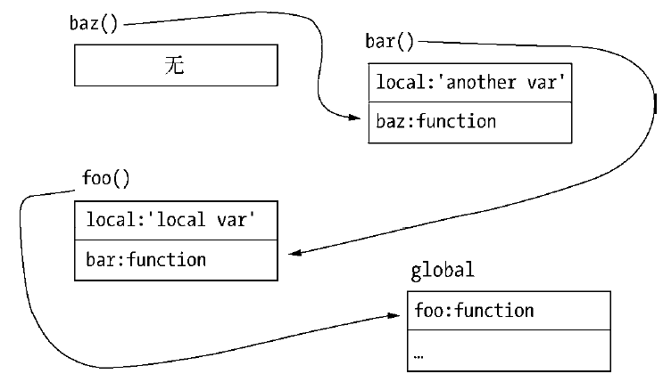
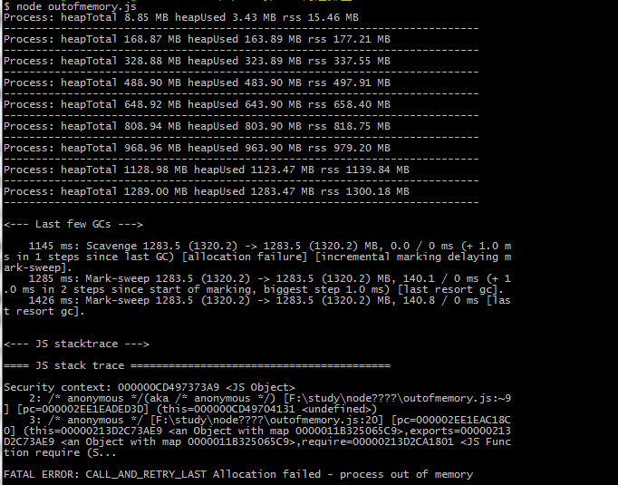
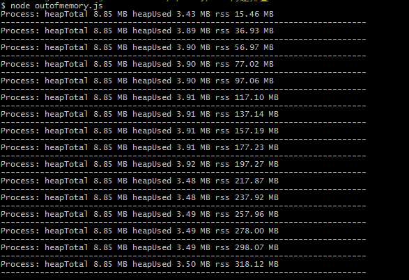

高效使用内存
如何触发垃圾回收，第一个要介绍的是作用域（scope）。在js中能形成作用域的有函数调用、with以及全局作用域。
var foo = function() {
var local = {};
};
foo()函数在每次被调用时会创建对应的作用域，函数执行结束后，该作用域将会销毁。同时作用域中声明的局部变量分配在该作用域上，随作用域的销毁而销毁。只被局部变量引用的对象存活周期较短。在这个示例中，由于对象非常小，将会分配在新生代中的From空间中。在作用域释放后，局部变量local失效，其引用的对象将会在下次垃圾回收时被释放。
以上是最基本的内存回收过程。
标识符查找
与作用域相关的即是标识符查找。所谓标识符，可以理解为变量名。在下面的代码中，执行bar()函数时，将会遇到local变量：
var bar = function() {
console.log(local);
};
js在执行时会去查找该变量定义在哪里。它最先查找的是当前作用域，如果在当前作用域中无法找到该变量的声明，将会向上级的作用域里查找，直到查到为止。
作用域链
var foo = function() {
var local = 'local var';
var bar = function() {
var local = 'another var';
var baz = function() {
console.log(local);
};
baz();
};
bar();
};
foo();
local变量在baz()函数形成的作用域里查找不到，继而将在bar()的作用域里寻找。如果去掉上述代码bar()中的local声明，将会继续向上查找，一直到全局作用域。这样的查找方式使得作用域像一个链条。由于标识符的查找方向是向上的，所以变量只能向外访问，而不能向内访问。如下图：

当我们在baz()函数中访问local变量时，由于作用域中的变量列表中没有local，所以会向上一个作用域中查找，接着会在bar()函数执行得到的变量列表中找到了一个local变量的定义，于是使用它。尽管在上一层的作用域中也存在local的定义，但是不会继续查找了。如果查找一个不存在的变量，将会一直沿着作用域链查找到全局作用域，最后抛出未定义错误。
变量的主动释放
如果变量是全局变量（不通过var声明或定义在global变量上），由于全局作用域需要直到进程退出才能释放，此时将导致引用的对象常驻内存（常驻在老生代中）。如果需要释放常驻内存的对象，可以通过delete操作来删除引用关系。或者将变量重新赋值，让旧的对象脱离引用关系。举个示例，老生代内存清除和整理的过程中，会被回收释放
global.foo = "I am global object"; console.log(global.foo); // => "I am global object" delete global.foo; // 或者重新赋值 global.foo = undefined; // or null console.log(global.foo); // => undefined
同样，如果在非全局作用域中，想主动释放变量引用的对象，也可以通过这样的方式。虽然delete操作和重新赋值具有相同的效果，但是在V8中通过delete删除对象的属性有可能干扰V8的优化，所以通过赋值方式解除引用更好。
闭包
下面代码，local会得到未定义的异常：
var foo = function() {
(function() {
var local = "局部变量";
}());
console.log(local);
};
在js中，实现外部作用域访问内部作用域中变量的方法叫做闭包（closure）。这得益于高阶函数的特性：函数可以作为参数或者返回值。
var foo = function() {
var bar = function() {
var local = "局部变量";
return function() {
return local;
};
};
var baz = bar();
console.log(baz());
};
在bar()函数执行完成后，局部变量local将会随着作用域的销毁而被回收。但是注意这里的特点在于返回值是一个匿名函数，且这个函数中具备了访问local的条件。虽然在后续的执行中，在外部作用域中还是无法直接访问local，但是若要访问它，可以通过中间函数来过渡。
闭包是js的高级特性，利用它可以产生很多巧妙的效果。它的问题在于，一旦有变量引用这个中间函数，这个中间函数将不会释放，同时也会使原始的作用域得不到释放，作用域中产生的内存占用也不会得到释放。除非不再有引用，才会逐步释放。
在正常js执行中，无法立即回收的内存有闭包和全局变量引用这两种情况。由于V8的内存限制，要十分小心此类变量是否无限制地增加，因为它会导致老生代中的对象增多。
内存指标
查看内存使用情况
前面用到的process.memoryUsage()可以查看内存使用情况。除此之外，os模块中totalmem()和freemem()方法也可以查看内存使用情况。
查看进程的内存占用
调用process.memoryUsage()可以看到Node进程的内存占用情况，示例代码如下：
`$` node
`>` process.memoryUsage()
{
rss: 18821120,
heapTotal: 10295296,
heapUsed: 5013664
}
rss是resident set size的缩写，即进程的常驻内存部分。进程的内存总共有几部分，一部分是rss，其余部分在交换区（swap）或者文件系统（filesystem）中。
除了rss外，heapTotal和heapUsed对应的是V8的堆内存信息。heapTotal是堆中总共申请的内存量，heapUsed表示目前堆中使用中的内存量。这3个值的单位都是字节。为了更好地查看效果，我们格式化一下输出结果：
var showMem = function() {
var mem = process.memoryUsage();
var format = function(bytes) {
return (bytes / 1024 / 1024).toFixed(2) + ' MB';
};
console.log('Process: heapTotal ' + format(mem.heapTotal) + ' heapUsed ' + format(mem.heapUsed) + ' rss ' + format(mem.rss));
console.log('---------------------------------------------------------------------------');
};
同时，写一个方法用于不停地分配内存但不释放内存，相关代码如下：
var useMem = function() {
var size = 20 * 1024 * 1024;
var arr = new Array(size);
for (var i = 0; i < size; i++) {
arr[i] = 0;
}
return arr;
};
var total = [];
for (var j = 0; j < 15; j++) {
showMem();
total.push(useMem());
}
showMem();
将以上代码存为outofmemory.js并执行它，得到的输出结果如下：

可以看到，每次调用useMem都导致了3个值的增长。在接近1500MB的时候，无法继续分配内存，然后进程内存溢出了，连循环体都无法执行完成，仅执行了9次。
查看系统的内存占用
与process.memoryUsage()不同的是，os模块中的totalmem()和freemem()这两个方法用于查看操作系统的内存使用情况，它们分别返回系统的总内存和闲置内存，以字节为单位。示例代码如下：
`$` node `>` os.totalmem() `>` 12798062592 `>` os.freemem() `>` 2753875968
从输出信息看，这台电脑总内存为8GB，当前闲置内存大致为4.2GB。
堆外内存
通过process.memoryUsage()的结果可以看到，堆中的内存用量总是小于进程的常驻内存用量。这意味着Node中的内存使用并非都是通过V8进行分配的。我们将那些不是通过V8分配的内存称为堆外内存。
这里将前面的useMem()方法稍微改造一下，将Array变为Buffer，将size变大，每一次构造200MB的对象，相关代码如下：
var useMem = function() {
var size = 200 * 1024 * 1024;
var buffer = new Buffer(size);
for (var i = 0; i < size; i++) {
buffer[i] = 0;
}
return buffer;
};
重新执行该代码，得到的输出结果如下所示：
